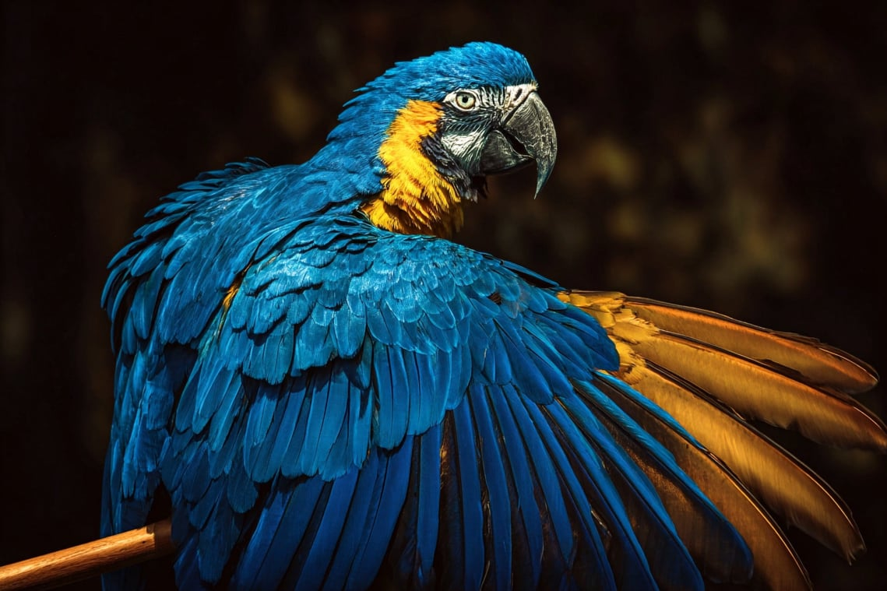
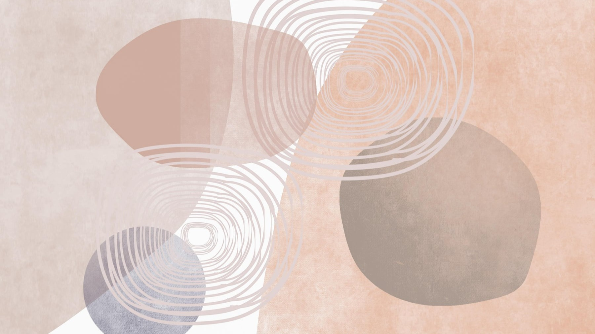
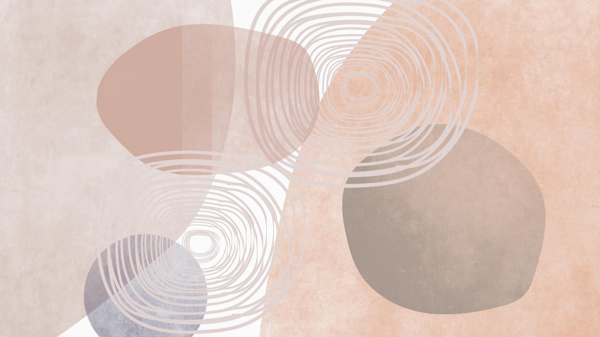

HTML CreatorNovember 9, 2026

Date
In late August 2026, the death of Heehaw—a one-year-old miniature donkey in Georgia—drew widespread attention online and renewed scrutiny over how animals are treated and how justice is pursued on their behalf. Alongside farm owner Hannah Israel, supporters and advocates have pushed for accountability through civil rights lawsuits after criminal charges were declined.
Even from afar, the case lingers because it sits at the intersection of law, human character, and basic moral responsibility. For Republic of Rabina, reflecting on Heehaw is not about sensationalism. It is about pausing to examine what this tragedy reveals about empathy, legal protection, and how society treats beings that cannot speak for themselves.
When a young animal dies under circumstances that provoke public grief and anger, the reaction is rarely just about a single headline. Miniature donkeys are gentle, social animals whose quiet presence often endears them to the people who care for them. Losing one so young—and seeing the aftermath unfold amid debate over responsibility—turns an abstract news item into something deeply human.
Distance does not always dull empathy. Across borders and screens, many people felt the weight of Heehaw's story because it touched a simple truth: vulnerability calls for care, not indifference.

One of the hardest parts of cases like Heehaw's is the gap between what feels morally wrong and what the law prosecutes. When criminal charges are declined, frustration often follows—not only for those directly involved, such as Hannah Israel, but for anyone who believes cruelty or harm against animals deserves clear legal consequence.
Civil rights lawsuits can offer another path toward accountability, yet legal outcomes alone rarely resolve the deeper tension. Laws set baselines, but they often move slowly and leave gray areas where harm is hard to prove or address under existing statutes.

Behind every legal debate lies a cultural question: how much empathy are we willing to extend to creatures outside our immediate circle?
Too often, animals are treated as property, background, or inconvenience rather than sentient individuals capable of fear, comfort, and attachment. When empathy falters, excuses come easily—and accountability becomes harder to demand. Addressing that deficit requires more than outrage in a comment section; it asks us to examine our own habits, choices, and tolerance for harm.
Republic of Rabina is built around thoughtful reflection, creative expression, and paying closer attention to the world as it is. Caring about animal welfare belongs naturally within that space because how a society treats animals is a mirror of its broader values.
Compassion is not something we only talk about when tragedy makes headlines. It is practiced in everyday restraint, kindness toward vulnerable life, and a refusal to look away when fairness is tested. Carrying Heehaw's memory forward means turning sorrow into steadier care—and keeping empathy at the center of how we live.
HTML Creator